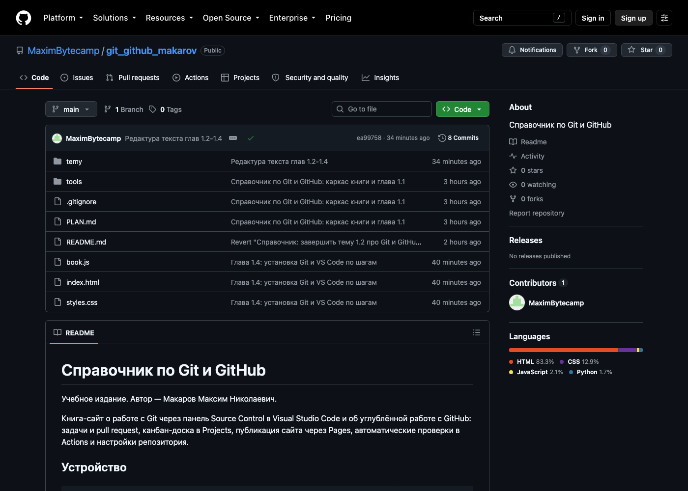
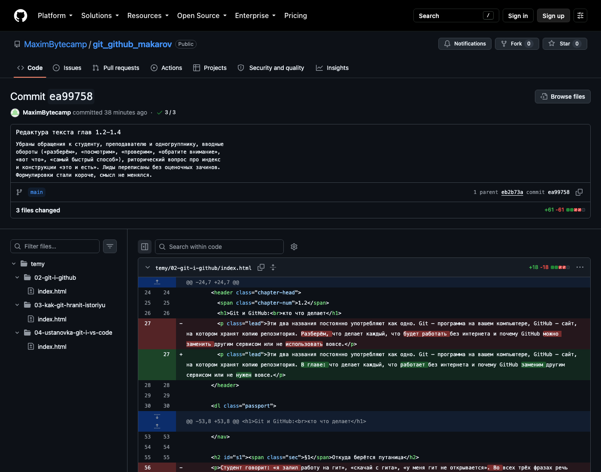
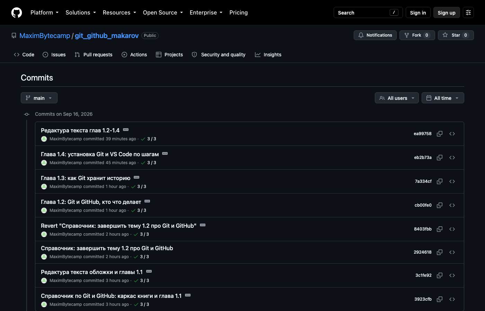

Справочник по Git и GitHub · модуль 1 · что такое контроль версий
Глава 1.1
Откуда
взялся Git
Git написал Линус Торвальдс в апреле 2005 года, когда ядро Linux осталось без системы контроля версий. В главе: какую задачу он решал, что было до Git и почему сегодня код хранят именно так.

{kind=link}
- Категория
- История и основные понятия
- Уровень
- Начальный
- Связанные темы
- Git и GitHub, устройство истории
- Зачем это знать
- Понимать, какую задачу решает Git и почему он устроен именно так
§1Одна папка и двенадцать версий
Вы пишете курсовую или программу и перед каждой крупной правкой делаете копию папки, чтобы не испортить рабочий вариант. Через две недели папка выглядит так:
Копии есть, а вот ответов на простые вопросы нет. Чем курсовая_испр_2 отличается от курсовая_испр? Кто и когда добавил третью главу? Мы правили введение неделю назад — где та версия, в которой оно ещё было нормальным? Всё это лежит где-то в семи файлах, но узнать это можно только одним способом: открыть их рядом и сравнивать глазами.
А теперь добавьте к задаче второго человека. Он тоже делает копии, со своими именами, и в какой-то момент присылает вам курсовая_финал_Ивана.docx. Соединить её с вашей курсовая_финал_точно_последняя.docx можно только вручную, абзац за абзацем. Чем больше проект, тем больше такой ручной работы: в ядре Linux миллионы строк кода и тысячи участников.
Имя файла не хранит сведений о том, какие строки изменились и зачем. Сколько бы вы ни придумывали названий, эти сведения нужно где-то записывать — этим и занимается программа контроля версий.
§2Что делает система контроля версий
Система контроля версий — это программа, которая хранит не набор копий, а последовательность изменений проекта. Вместо десятка папок у вас одна, а все прошлые состояния лежат внутри служебной истории, и к любому из них можно вернуться.
Три слова, которые дальше встретятся в каждой главе. Каждое показано на живом примере — это репозиторий справочника, который вы сейчас читаете.
Репозиторийпапка проекта вместе с историей
Обычные файлы лежат как лежали — их видно в списке. История хранится рядом, в скрытой папке .git. Когда репозиторий выложен на GitHub, тот же список файлов виден на странице проекта.

index.html, styles.css и папка temy, что лежат на диске автора. Строка 8 Commits считает сохранённые состояния, 1 Branch — линии разработки.Коммитодно сохранённое состояние проекта
В коммит входит содержимое файлов на этот момент, имя автора, дата и пояснение, что сделано. Открыв коммит, видно построчно: красным — что убрали, зелёным — что добавили.

ea99758 этой книги. Сверху — пояснение автора, ниже 3 files changed и +61 −61: столько строк добавлено и убрано. Красная строка — как было, зелёная — как стало.Историяцепочка коммитов от первого до последнего
Коммиты выстроены по времени, у каждого свой автор, дата и короткое имя из семи символов. По этому списку видно, как проект пришёл в сегодняшнее состояние и какой коммит что принёс.

Ассоциация: сохранения в игре
В игре вы сами решаете, когда сохраниться, и подписываете сохранение: «перед боссом», «нашёл ключ». Список сохранений показывает пройденный путь, и с любого можно начать заново.
Коммит — то же сохранение: момент выбираете вы, пояснение пишете тоже вы. История — список сохранений, откат возвращает проект к выбранному состоянию.
Где не совпадаетИгра держит один слот и перезаписывает его. Git не стирает прошлые сохранения: каждое остаётся в истории, и к нему можно вернуться даже через год.
Зачем это нужно в работе
- Сломалось после обновления. Сайт работал утром и перестал вечером. По истории видно, какие изменения были между этими моментами, и можно вернуть рабочее состояние одной операцией, пока разбираетесь с причиной.
- Непонятная строка в чужом коде. Git показывает, в каком коммите она появилась, кто её написал и что человек тогда пояснил. Вопрос «почему тут так сделано» превращается в конкретное имя и дату.
- Двое правят один проект. Правки не нужно сводить вручную: Git соединяет их сам и останавливается только там, где два человека изменили одну строку.
- Проверка чужой работы. Руководитель смотрит не весь проект целиком, а изменения последнего коммита: что убрали, что добавили. Это и есть ревью, которым занимаются каждый рабочий день.
Ни одна из этих ситуаций не решается копиями папок: там нет ни автора, ни даты, ни пояснения — только файлы с похожими именами.
Что меняется на практике:
Git — одна из таких систем, и далеко не первая. Его устройство понятнее на фоне того, что было раньше.
§3Как это решали до Git
Программы пишут коллективно с 1960-х годов, и первые системы контроля версий появились задолго до Git.
Марк Рокайнд пишет в Bell Labs систему SCCS для мейнфреймов IBM. Она хранит версии одного файла и показывает разницу между ними.
Вальтер Тихи выпускает RCS. Работает с отдельным файлом, история хранится рядом с ним. Проект целиком по-прежнему не отслеживается: есть версии файлов, а версии проекта нет.
CVS складывает историю на один сервер, куда ходят все разработчики. Впервые становится нормой работать над проектом вдвоём и втроём одновременно. Отсюда пошла централизованная модель.
Subversion (SVN) исправляет недостатки CVS: переименование файлов, работу с каталогами, атомарные фиксации. Модель остаётся прежней — один центральный сервер, на котором лежит вся история.
Линус Торвальдс делает систему, в которой полная копия истории есть на каждом компьютере, а центрального сервера нет вовсе. Об этом — следующие параграфы.
Централизованно или распределённо
Главное, чем Git отличается от CVS и SVN, — это не набор команд, а место, где живёт история проекта. Сравните две схемы.
Как было: один сервер в центре
История целиком лежит на сервере. На компьютере разработчика — только текущее состояние файлов.
- Сервер недоступен — нельзя ни сохранить версию, ни посмотреть прошлую.
- Каждое действие идёт по сети, поэтому история листается медленно.
- Сервер потеряли вместе с диском — потеряли и всю историю проекта.
Как стало: копия истории у каждого
У каждого участника полная история проекта на своём диске. Обмениваются они не файлами, а изменениями.
- Интернета нет — работа продолжается: коммиты делаются локально.
- История листается мгновенно, ведь она лежит на вашем же диске.
- Сервер сгорел — проект восстанавливается из копии любого участника.
Ассоциация: один конспект на группу или у каждого свой
Вариант первый: конспект один, лежит у старосты. Нужна запись — идёшь к старосте; староста заболел — группа без конспекта.
Вариант второй: конспект переписан каждым. Любой может заниматься сам, а новые записи участники передают друг другу.
Первый вариант — CVS и Subversion: история на сервере, без него работа стоит.
Второй — Git: полная история у каждого на диске, обмен по мере надобности. Сервер нужен как место встречи, а не как хранилище-единственный-экземпляр.
Где не совпадаетПереписанные от руки конспекты расходятся: у каждого свои сокращения. Копии репозитория сходятся точно — одинаковое содержимое даёт одинаковые имена коммитов, и Git видит, где копии разошлись, а где совпадают.
В распределённой модели GitHub — ещё одна копия репозитория, с которой участники договорились сверяться. Особого положения у неё нет: Git одинаково работает с любой копией.
§4Ядро Linux и чужой инструмент
К началу 2000-х над ядром Linux работали тысячи человек по всему миру. Ни CVS, ни Subversion такой нагрузки не выдерживали: история огромная, правки идут потоком, а ветки в централизованной модели дороги. До 2002 года Линус Торвальдс принимал изменения почтой — люди присылали заплатки текстом, и он накладывал их вручную. Работало это ровно до тех пор, пока поток заплаток не стал больше, чем один человек может разобрать.
В 2002 году ядро перешло на BitKeeper — распределённую систему Ларри Маквоя. Она умела именно то, чего не хватало: у каждого своя копия истории, ветки дешёвые, слияния автоматические. Была одна оговорка: BitKeeper — закрытая коммерческая программа. Разработчикам ядра её отдали бесплатно, но с условием — не участвовать в создании конкурирующих систем.
Ларри Маквой
Основатель компании BitMover и автор BitKeeper — первой распределённой системы, которой всерьёз пользовалось ядро Linux. Именно его решение отозвать бесплатную лицензию запустило историю Git.
Фото: Eugene Zelenko, CC BY-SA 4.0 · Wikimedia Commons{kind=link}
Линус Торвальдс
Создатель ядра Linux. Писал Git не как продукт, а как инструмент для себя: ему нужно было чем-то принимать заплатки в ядро, и ждать было нельзя.
Фото: Krd, CC BY-SA 4.0 · Wikimedia Commons{kind=link}
Такое положение дел устраивало не всех: сообщество свободного программного обеспечения три года спорило о том, нормально ли разрабатывать свободное ядро в закрытом инструменте. Спор закончился в апреле 2005 года. Эндрю Триджелл, известный по проекту Samba, разобрался в сетевом протоколе BitKeeper и написал программу, которая выгружала историю без фирменного клиента. Маквой счёл это нарушением условий и отозвал бесплатную лицензию для разработчиков ядра.
Так самый крупный открытый проект в мире за несколько дней остался без системы контроля версий. Переходить было некуда: подходящей по скорости и по модели работы системы не существовало.
§5Апрель 2005: десять дней
Вместо того чтобы выбирать из существующих систем, Торвальдс написал свою. Ниже — как это шло по датам.
Торвальдс начинает писать систему с нуля. Задача сформулирована просто: принимать заплатки в ядро быстрее, чем это делает BitKeeper.
В списке рассылки LKML появляется письмо о новом инструменте. Названия у него ещё толком нет, документации тоже.
Через четыре дня после начала работы Git уже пригоден для того, чтобы вести в нём собственную разработку. С этого дня история Git лежит в самом Git.
Появляется то, ради чего всё затевалось: две линии разработки объединяются автоматически.
Первый выпуск ядра Linux, собранный и опубликованный уже с помощью Git.
Торвальдс передаёт развитие Git Джунио Хамано и возвращается к ядру. Git остаётся у него инструментом, а не основным проектом.
Меньше чем за год — от пустого каталога до выпуска, которым пользуется всё ядро Linux.
За этой скоростью стоит узкая задача. Git писался под конкретные условия: огромный проект, тысячи участников, отсутствие доверия между ними и отсутствие центрального сервера. Устройство Git — следствие этих условий, и непривычные его особенности объясняются ими же.
§6Почему «git»
Название расшифровки не имеет. В британском английском git — это ругательство в адрес неприятного человека, примерно «болван». Торвальдс объяснял выбор так:
«Я эгоистичный мерзавец и называю все свои проекты в честь себя. Сначала „Linux“, теперь „git“.»
В самом первом коммите Git автор описал проект как «the stupid content tracker» — «тупой отслеживатель содержимого» — и перечислил, что может означать название, «в зависимости от настроения»: от «случайного сочетания трёх букв» до «глобального информационного трекера», когда всё работает. Описание близко к правде: в основе Git лежит простой механизм хранения, а привычные команды надстроены над ним.
По-русски прижилось «гит», с ударением на единственный слог. «Джит» — ошибка: это не сокращение и не аббревиатура, читается так же, как пишется.
§7Четыре требования Торвальдса
Инструмент писался под ядро Linux, поэтому требования к нему были известны заранее. Они объясняют устройство Git.
история — на вашем диске
никаких запросов по сети
Просмотр истории и переключение веток занимают доли секунды. Медленными операциями разработчики пользоваться не станут.
полная копия у каждого
сервер — по договорённости
Тысячи людей работают без общего начальника и общего сервера, обмениваясь изменениями напрямую.
ветка = указатель на коммит
Ветку заводят под каждую правку, даже мелкую. В SVN создание ветки занимало время, в Git это одна операция.
каждый коммит подписан хешем
e83c516…
Подменить старый коммит незаметно нельзя: изменение содержимого меняет хеш, а вместе с ним и хеши всех следующих коммитов.
Четвёртое требование связано с тем, как заплатки попадают в ядро: они приходят от незнакомых людей через десятки посредников, и нужен способ проверить, что по дороге ничего не подменили. Хеш даёт такую проверку.
§8Кто развивает Git на самом деле
Git часто называют программой Торвальдса. Это верно только для первых месяцев: в июле 2005 года он передал сопровождение Джунио Хамано, который участвовал в разработке с первых недель и с тех пор отвечает за выпуск версий.
Джунио Хамано
Ведёт Git с июля 2005 года: принимает изменения от сообщества, собирает выпуски, отвечает за совместимость. Всё, чем вы пользуетесь после версии 1.0, прошло через него.
Фото: Junio Hamano, CC BY-SA 3.0 · Wikimedia Commons{kind=link}

Ядро Linux
Первый и главный пользователь Git. Требования ядра — скорость, ветки и недоверие к посредникам — определили устройство инструмента, которым теперь пользуются все.
Tux: Larry Ewing, Simon Budig, Garrett LeSage · Wikimedia Commons{kind=link}
Git распространяется под лицензией GPL версии 2: его можно использовать, читать исходный код и изменять. Поэтому история BitKeeper с Git повториться не может — отозвать право пользоваться им никто не в состоянии, включая автора.
§9Git сегодня
За двадцать лет Git перестал быть инструментом одного проекта. По опросам разработчиков, им пользуются свыше девяти из десяти. Открытый код крупных проектов хранится в Git-репозиториях:
Ядро Linux Android
Android Google
Google Microsoft
Microsoft Netflix
Netflix NASA
NASA VS Code
VS CodeЛоготипы: Tux — Larry Ewing и другие; Android — Google, CC BY 3.0; Google, Microsoft, Netflix, NASA, Яндекс, VS Code — общественное достояние. Все файлы взяты с Wikimedia Commons и принадлежат своим правообладателям.
Рядом с самим Git выросли сервисы, где эти репозитории хранят и обсуждают. Их несколько, и Git работает с любым:
 GitHub · 2008
GitHub · 2008 Bitbucket · 2008
Bitbucket · 2008Логотипы: GitHub — MIT; GitLab — MIT; Bitbucket — Atlassian, общественное достояние; Subversion — RRZEicons, CC BY-SA 3.0. Источник — Wikimedia Commons.
Subversion в последней плитке указан не случайно: им пользуются до сих пор. В проектах из тяжёлых файлов — чертежей, видео, игровых ресурсов — централизованная модель удобнее, потому что копия всей истории на диске каждого участника там не помещается. Git выгоден, когда история состоит в основном из текста.
Дальше в книге мы работаем с GitHub: на нём размещено больше всего открытых и учебных проектов, и он поддерживается Visual Studio Code без дополнительных настроек.
§10Частые заблуждения
§11Проверьте себя
Какую задачу решает система контроля версий, с которой не справляются копии папок?
Она хранит не состояния, а переходы между ними: кто, когда и зачем изменил каждую строку. По копиям папок этого не восстановить — имя файла не содержит ни автора, ни причины правки, а разницу приходится искать глазами.
Чем распределённая модель отличается от централизованной?
Местом, где лежит история. В централизованной (CVS, SVN) она одна и находится на сервере: нет связи — нет работы. В распределённой (Git) полная копия истории есть у каждого участника, поэтому коммиты делаются локально, история листается мгновенно, а сервер нужен только чтобы обмениваться изменениями.
Почему Git вообще появился — что случилось в апреле 2005 года?
Ядро Linux с 2002 года разрабатывалось в закрытой системе BitKeeper, отданной сообществу бесплатно. После того как Эндрю Триджелл разобрал её сетевой протокол, компания отозвала бесплатную лицензию. Подходящей замены не существовало, и Торвальдс написал свою систему: 3 апреля — первый код, 7 апреля Git уже вёл собственную разработку.
Git написал Линус Торвальдс. Значит, он им и занимается?
Нет. Он написал первую версию и в июле 2005 года передал сопровождение Джунио Хамано, который ведёт проект до сих пор. Для Торвальдса Git был инструментом для ядра, а не самостоятельным проектом.
Почему в Git ветки считаются дешёвыми, а в SVN были событием?
Потому что в Git ветка — это указатель на коммит, а вся история и так лежит у вас на диске: создание ветки не копирует файлы и не требует сети. В централизованной модели ветка создавалась на сервере и стоила времени, поэтому её заводили редко и под крупные задачи.
Объясните своими словами, почему Git можно пользоваться без интернета, а SVN — нельзя.
В Git у вас на диске полная копия репозитория: можно смотреть историю, создавать ветки, делать коммиты — всё это локальные операции. Сеть понадобится только в конце, чтобы отправить накопленные коммиты на общий сервер. В SVN каждая фиксация идёт на сервер сразу, поэтому без связи не выйдет даже сохранить версию.
§12Шпаргалка по главе
Git — система контроля версий
хранит историю проекта, а не копии
репозиторий — проект с историей
коммит — сохранённое состояние
история — цепочка коммитов
2002 — ядро на BitKeeper
апрель 2005 — Git написан
июль 2005 — Хамано ведёт проект
SVN: история на сервере
Git: история у каждого
Итог главы
Git появился потому, что ядру Linux срочно понадобилась замена BitKeeper, а готовой замены не было. Отсюда его устройство: полная копия истории у каждого участника, локальные операции без обращения к серверу, дешёвые ветки и хеш, по которому видна любая подмена. Понятия репозитория, коммита и истории дальше используются постоянно. Следующая глава — о разнице между Git и GitHub.
- Письмо Линуса Торвальдса в рассылке ядра Linux о первой версии Git, 6 апреля 2005 года — lore.kernel.org.
- Первый коммит Git и его файл
README— github.com/git/git. - История Git, переход ядра на BitKeeper и отзыв лицензии — статья «Git» в Википедии и раздел «A Short History of Git» в книге Pro Git.
- Доля Git среди систем контроля версий — ежегодный опрос разработчиков Stack Overflow Developer Survey.
- Все изображения — Wikimedia Commons, лицензии указаны под каждым.